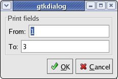
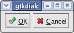

Gtkdialog is a small utility for fast and easy GUI building. It can be used to create dialog boxes for almost any interpreted and compiled programs which is a very attractive feature since the developer does not have to learn various GUI languages for the miscellaneous programming languages.
On this page we demostrate some of the most important features.
The Gtkdialog utility uses the Glade Library to load, parse and execute Glade files. Gtkdialog makes the use of Glade created user interfaces convenient in a shell script or any other interpreted language.
The following shell script will load and execute a Glade XML file:
#! /bin/bash
gtkdialog --glade-xml=glade-01.00-entries_functions.glade \
--include=glade-01.00-entries_functions.functions \
--program=login_window
As it is clear from the example, it is easy to determine the Glade XML file, the file with the shell functions we use as callbacks and the name of the first window.
The following example program is an event-driven BASH script which contains a dialog description (MAIN_DIALOG) and a function (print_this. When the script is started the dialog box is displayed by the gtkdialog program which will call the functions whenever it is necessary.
It is very simple to write event-driven programs by this example. The first line must call the gtkdialog program with the -e option, the script has to be built using BASH functions and dialog descriptions (as environment variables) and one of the dialog descriptions must have the name MAIN_DIALOG. This MAIN_DIALOG will be processed and viewed first because of its name (like the main() function in the programs written in C).
The event-driven programming method is useful for larger programs for it is much easier to handle the complexity of the project separating the dialog descriptions and the shell functions.
#! /usr/bin/gtkdialog -e
function print_this() {
echo "print: $1"
}
export MAIN_DIALOG='
<vbox>
<button>
<label>function</label>
<action>print_this button</action>
</button>
<button>
<label>Exit</label>
</button>
</vbox>
'
 The following code is a small AWK script using a simple dialog box to communicate with the user. When the program started a dialog box is displayed and when the user presses the OK button the script is working on the usual manner as a filter program.
There is an AWK function in this program (launchdialog) which can be used as to display any dialog box. The function stores the state of the dialog box in an associative array after the user closed the window so the user input can be easily used in the whole program. It is very easy to GUIfy AWK scripts using the introduced function so please feel free to recycle this piece of code with or without modifications.
#! /usr/bin/awk -f
function launchdialog( dialog, array ){
tempfile= "/tmp/awk" PROCINFO["pid"]
print dialog >tempfile; close(tempfile)
oldfs=FS; FS="="
while( (("gtkdialog -f " tempfile) | getline)>0 )
array[$1]=substr($2, 2, length($2)-2 )
close("gtkdialog -f " tempfile)
FS=oldfs
system( "rm -f " tempfile )
}
BEGIN {
MAIN_DIALOG="\n\
<vbox>\n\
<frame Print fields>\n\
<hbox>\n\
<text>\n\
<label>From:</label>\n\
</text>\n\
<entry><variable>FROM</variable>\
<default>1</default> </entry>\n\
</hbox>\n\
<hbox>\n\
<text>\n\
<label>To:</label>\n\
</text>\n\
<entry><variable>TO</variable>\
<default>3</default></entry>\n\
</hbox>\n\
</frame>\n\
<hbox>\
<button ok></button>\n\
<button cancel></button>\n\
</hbox>\
</vbox>\n\
"
launchdialog( MAIN_DIALOG, variables)
if( variables["EXIT"]=="Cancel" )
exit
}
{
for( n=1; n<=NF; ++n )
if( n>=strtonum(variables["FROM"]) &&
n<=strtonum(variables["TO"]) )
printf "%6.2f ", $n
printf "\n"
}
 The next example is a small program written in C using the Gtkdialog to display a simple dialog box with two buttons. The program is far from being sophisticated or even nicely written but it is good to demonstrate the simplicity of the idea. The program exports the dialog description using an environment variable and displays the dialog by calling the gtkdialog program as a child process. When the window is closed by the user, the program reads the standard output of the child process to decide what to do.
This method is useful if you want to create simple C programs with GUI in five minutes without learning the use of any of the complex GUI libraries.
#include <stdlib.h>
#include <stdio.h>
#include <string.h>
main(){
FILE *stream;
char line[256];
putenv(
"MAIN_DIALOG=<hbox>"
" <button ok></button>"
" <button cancel></button>"
"</hbox>");
stream = popen("gtkdialog --program=MAIN_DIALOG", "r");
fgets(line, 255, stream);
if (strstr(line, "OK") != NULL)
printf("You pressed the OK button.\n");
else
printf("This is not the OK button.\n");
pclose(stream);
}
Please use the following bibtex item to cite Gtkdialog:
@Article{gtkdialog:2004,
author = "L\'aszl\'o Pere and M\'aty\'as Koniorczyk",
year = "2005",
title = "A universal fast graphical user interface building\
tool for arbitrary interpreters",
journal = "Journal of Visual Languages and Computing",
volume = "16",
pages = "231--244",
abstract = "We consider an issue of implementing graphical user
interfaces (GUIs): we introduce an easy-to-use fast
GUI building tool, specially designed to be used
with interpreters. It supports a variety of
communication methods and interaction models,
therefore it can collaborate a huge diversity of
interpreters in a natural way, in POSIX compliant
(or similar) environment. Thus it enables the
programmer to easily create a GUI, no matter what
kind of language or model the actual interpreter
implements. Event-driven programs in UNIX shells,
and graphical user interfaces in a data oriented
language are presented as example applications.",
keywords = "user interface, GUI, interpreters, shells,
event-driven programming"
}